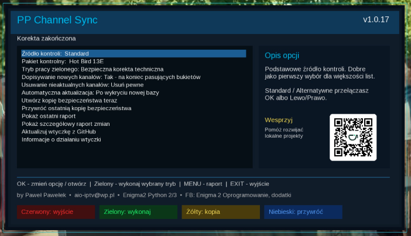

Witam na mojej stronie Paweł Pawełek
Listy kanałów • korekta • raport
PP Channel Sync v1.0.17
Wtyczka dla Enigma2 Python 2/3 do kontroli i bezpiecznej korekty posiadanej już listy kanałów. Pomaga utrzymać aktualne kanały bez ręcznego poprawiania list po zmianach na satelicie.

Do czego służy
PP Channel Sync sprawdza listę, którą masz już w tunerze, wykonuje kopię bezpieczeństwa, koryguje wpisy kanałów i zapisuje raport zmian.
Wtyczka nie jest zwykłym instalatorem gotowej listy. Jej głównym zadaniem jest pomoc w uporządkowaniu i odświeżeniu obecnej listy użytkownika.
Plik: enigma2-plugin-extensions-ppchannelsync_1.0.17_all.ipk 32.0 KB
Najważniejsze możliwości
- kontrola posiadanej listy kanałów
- kopia bezpieczeństwa przed korektą
- raport skrócony i szczegółowy po wykonaniu operacji
- dopisywanie nowych kanałów do pasujących, już istniejących bukietów
- zachowanie obecnego układu listy i kolejności kanałów
- wybór pakietu kontrolnego dla różnych satelitów
- możliwość przywrócenia wcześniejszej kopii z poziomu wtyczki
Jak korzystać
- Uruchom PP Channel Sync z menu wtyczek Enigma2.
- Wybierz z listy odpowiedni pakiet kontrolny zgodny z Twoją konfiguracją satelit.
- Ustaw tryb pracy, dopisywanie nowych kanałów i sposób obsługi nieaktualnych pozycji.
- Naciśnij zielony przycisk, aby wykonać wybrany tryb pracy.
- Po zakończeniu sprawdź komunikat oraz raport zmian.
Gdzie trafiają nowe kanały
Jeśli wtyczka znajdzie nowe kanały, dopisuje je na końcu pasujących, już istniejących bukietów. Dla czytelności dodawana jest osobna sekcja:
........ nowe kanały - PP Channel Sync ........Dzięki temu łatwo sprawdzić, co zostało dodane, i samodzielnie zdecydować, czy kanały zostawić, przenieść wyżej albo usunąć.
Dlaczego kanał może się powtórzyć
Niektóre kanały mogą zostać dopisane mimo tego, że podobna pozycja istnieje już na liście. Różne listy kanałów używają czasem innych nazw, oznaczeń, wersji HD/SD, regionalnych wariantów albo innych wpisów tego samego kanału.
Wtyczka działa ostrożnie: lepiej dopisać kanał do sprawdzenia na końcu listy niż przypadkowo usunąć albo podmienić coś, co użytkownik miał ustawione po swojemu.
Obsługa wielu satelitów
Wtyczka może pracować z różnymi konfiguracjami satelitarnymi. Wystarczy wybrać odpowiedni pakiet kontrolny w opcjach wtyczki, np. dla jednej satelity, zestawu Dual Feed albo większej konfiguracji.
Bezpieczeństwo
Przed wykonaniem korekty tworzona jest kopia bezpieczeństwa. W razie potrzeby można ją przywrócić bezpośrednio z poziomu wtyczki.
Po korekcie wtyczka zapisuje raport, dzięki czemu można sprawdzić, co zostało wykonane.
Zdjęcia / podgląd
Instalacja pobranego IPK przez FTP
Wgraj plik IPK do katalogu /tmp, a następnie wykonaj polecenie w terminalu OpenWebif albo PuTTY.
opkg install --force-reinstall /tmp/enigma2-plugin-extensions-ppchannelsync_1.0.17_all.ipkPo instalacji wykonaj restart GUI.